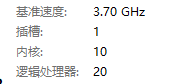
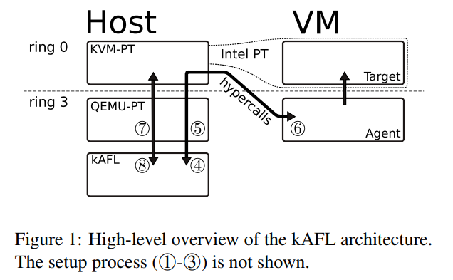
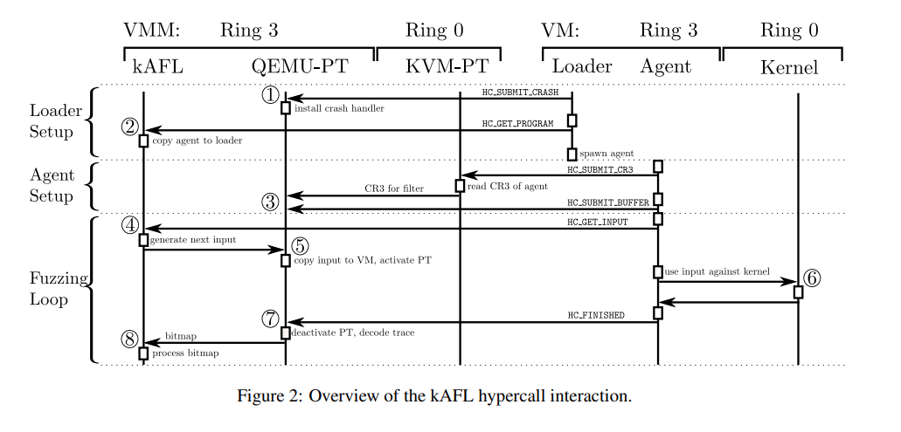
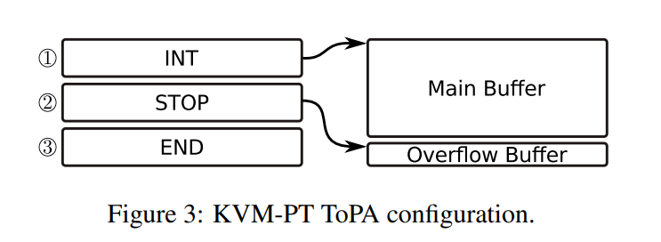
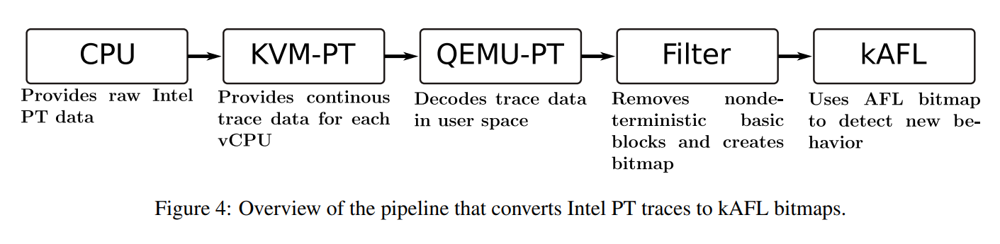

kafl paper阅读
每周学习，用于督促下班后好好把握自由时间来学习。
摘要
介绍了当下fuzz的重要性，基于反馈的fuzzer可以发现很多安全问题。但是针对kernel当今没有很好的解决方案，然后作者解释原因，如kernel crash了整个系统重启，fuzzer也会没。最后介绍kafl，基于硬件特性如hypervisor和pt从而使得fuzzer和操作系统隔离开来。成功挖到许多漏洞。
介绍
随着各种高大上的保护出现，常见的漏洞越来越难利用，但是内核态的防护还是不多，而且很多复杂防护会影响操作系统运行效率导致没有上。导致关注内核的人越来越多。
很长一段时间来fuzz都是一种增加软件安全性的好策略。随着afl的公开，业界出现了越来越多的smart fuzz，基于input的反馈来“学习”，从而一步步推出数据格式，增大代码覆盖率。但是afl是面向用户态的缺少内核态支持，内核态复杂很多会遇到很多困难。
本文的kafl将退出一种全新的技术来允许反馈式fuzz运用于所有基于x86-64的内核。并具有很好的可移植性。
技术背景
利用了一些硬件特性，需要cpu支持，本节主要介绍一些硬件的特性。
x86-64 Virtual Memory Layouts
用户态内核态的虚拟地址布局，内核态每个进程共享，一个物理地址映射到多个虚拟地址
Intel VT-x
kafl内核层fuzz基于硬件虚拟化技术。
三种不同的cpu，物理cpu，逻辑cpu，虚拟cpu。
物理cpu是真实的cpu，大部分现代cpu都实现了超线程技术，用于在单核上运行多线程。所以就出现了逻辑cpu，每个核心都有几个逻辑处理器

如i9 10900k，就是10核心，20逻辑处理器。
每个核心俩个逻辑处理器在交错处理时效率会很大，如一个逻辑处理器在进行计算另一个在进行等待。每个逻辑cpu对于操作系统来说都类似一整个cpu，所以就存在一种可能性，可以在单个逻辑cpu上构建多个虚拟机。
虚拟化模型分为俩部分，VMM和VM，VMM又被称作hypervisor或是host，这是一个高权限进程对整个物理cpu有完整操作权限，并给其虚拟化的客户端提供有限的物理资源。VM，也就是客户端，运行在VMM提供的虚拟化上下文环境中。
为了给硬件虚拟化提供支持，intel vt-x新增了俩种运行模式，VMX ON 和 VMX OFF, VMX OFF就是没有任何虚拟化操作，操作系统直接运行。打开后就在操作系统和物理cpu中新增了一层也就是hypervisor。
当运行在客户端模式下，遇到执行特权指令或获取特定设备资源时都会触发VM-Exit操作，此时把控制权交给hypervisor。这样成功实现牺牲小部分性能换取了虚拟化特性。将整个操作系统隔离开。为了更好的控制VM,VMM为每个虚拟cpu提供一个VMCS结构体，里面包含了一些特定信息如当前的状态和翻译vCPU的方法。
Intel Processor Trace
用于跟踪地址，区别于其他tracer，受限较少。
系统概览

整个系统分为三块：fuzzing逻辑，vm基础设置（QEMU-PT KVM-PT）,用户端。
整个fuzzing逻辑都在用户态运行，即kafl。VM设施包含了用户态的QEMU-PT和内核态的KVM-PT。这俩个设施相互通信从而使得intel pt得数据可以被kafl获取。guest和host通过hypercall来进行通信。host从而可以对guset内存进行读写并当请求被满足后继续跑VM。

整个fuzz得流程如上，最开始时用户态loader通过hypercall HC_SUBMIT_PANIC来向QEMU-PT提交内核态异常处理函数地址BugCheck.QEMU-PT接着patch函数从而能更快的接收到函数的异常处理。而不是等待系统重启。
接着loader通过HC_GET_PROGRAM来启动agent。agent后续三步，先是提交当前进程的cr3，hypervisor会分解cr3寄存器并把其转交给QEMU-PT来过滤。最后agent通过HC_SUBMIT_BUFFER来通知host它期望输入的地址。到此fuzzer初始化完成接着fuzzer会建立起主循环。
在主循环中agent会通过HC_GET_INPUT来请求一个新输入。然后fuzzer会生成一个新的输入并把它传递给QEMU-PT。因为QEMU-PT对整个guest有完整权限，所以可以直接把input拷贝进agent指定的地址处。然后就会启动VM-Entry来今昔整个VM的运行，同时VM-Entry会启用PT。接着agent接受输入并与内核进行交互。当kernel被fuzz时，QEMU-PT会解码trace的数据并根据需求对bitmap进行更新。当整个交互完成时内核会基于agent反馈，然后agent通过HC_FINISHED来通知。接着QEMU-PT解码整个trace数据把结果传递给kafl做后续处理。agent可以在遇到下一个HC_GET_INPUT以启动下一个迭代前可以继续做处理。
Fuzzing Logic
整个fuzzing logic由kafl的命令和控制俩部分组成。负责管理一系列输入与输入变异。在大多数情况下他的算法和afl的一样。类似于afl，我们用bitmap来存储基本块信息，根据QEMU-PT的接口获取bitmap来决定哪些输入会触发有趣的行为kafl与afl算法的最大区别就是对多进程和并行的优化，从而如果核心多，会很大程度的提高效率。
User Mode Agent
需要一个agent在虚拟环境下通过hypercall与内核交互。
理论上只需要俩个组件
加载器：负责从hyperecall接口接收任意二进制数据，二进制数据就是用户态agent，同时加载器还会检测crash。
这几个组件可以让我们给VM传递任意二进制数据并在fuzz不同的组件时重用快照。
Virtualization Infrastructure
整个fuzz逻辑通过QEMU-PT与KVM-PT交互来附加整个VMs。KVM-PT允许我们跟踪每个独立的虚拟cpu。
Stateful and Non-Deterministic Code
Tracing整个操作系统导致有很多不确定性，如中断请求时刻都会发生。
解决方法是过滤中断和黑名单。
Hypercalls
hypercall由vmcall指令触发，类似于内核的syscall，hypercall是对于VMMS的。任何三环进程或者内核执行vmcall指令都会触发VM-Exit事件然后VMM来决定如何处理。kafl的hypercall是定制的，magic value被存在rax，hypercall-ID会被存在rbx，hypercall还能从三环被接收。具体hypercall的参数通过rcx传递，一个例子就是HC_SUBMIT_BUFFER他的参数是一个用户态指针存放在rcx中。当执行vmcall时，VM-Exit触发然后QEMU-PT存放并传递字符串指针，过一段时间会拷贝新的输入进这个指针里。最终VM的执行继续。
还有一种使用案例就是识别crash。具体办法就是patch bugcheck函数为一个hypercall。
1 | |
Implementation Details
主要介绍一些细节
KVM-PT
Intel-PT允许trace分支而不需要该内核或打补丁。但是不能长时间，而KVM-PT允许。
vCPU Specific Traces
为了启用pt，内核态程序需要设置MSR寄存器的特定标志位。设置完后逻辑cpu会跟踪执行的代码（满足过滤要求）。标志位修改需要在cpu从host离开前完成否则进入guest时无权限修改。另外还启用MSR autoload来达成只trace特定vcpu数据。
Continuous Tracing
讲解了持续化跟踪的办法与处理。

QEMU-PT
QEMU-PT作为QEMU扩展给KVM-PT提供用户态接口。接口提供一系列功能如启用关闭PT，检测溢出。KVM-PT可以通过ioctl和mmap来交互。
PT Decoder

由于fuzz内核会产出一堆的数据所以需要快速精确的decoder。否则这会成为一个瓶颈。
intel提供了libipt但是并不符合需求。
kafl利用mmap并采用jit思路。且没有文件落地灯，最终数据都会被转化成AFL bitmap格式
AFL Fuzzing Logic
fuzz部分逻辑与之前博客写的类似，变异然后看是否有新的分支，有则保存后继续变异。
后面部分就是讲解kafl的实施与应用。没仔细看下去了。
后续单开文章讲源码解析。
安装教程
环境Ubuntu20.04物理机。
i910900k 128g内存 2tssd
安装最新版本
https://github.com/IntelLabs/kAFL
1 | |
记得要翻墙。不然特别慢。